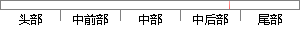

如果在录音完毕后录音人编辑框中有文字信息，则将录音人信息写入进文件。
片段位置图

相似结果|
相似片段 1：或点击停止播放按钮。（3） 水印信息的嵌入当录音停止时，自动将水印信息嵌入到录音文件中，创建水印录音文件和水6印嵌入完毕时写入存储卡中，并将水印后的录音文件写入数据库。（4） 检测水印功能实现水印信息的提取，再和原水印信息进行比较，判断此录音文件的完整性。
|
※ 片段修改建议 ※
近似词参考：- 录音：灌音
- 完毕：终了
- 录音：灌音
- 文字：笔墨
- 录音：灌音
系统自动生成语句：如果在灌音终了后灌音人编辑框中有笔墨信息，则将灌音人信息写入进文件。
注：本片段修改建议为系统自动生成，仅供参考。